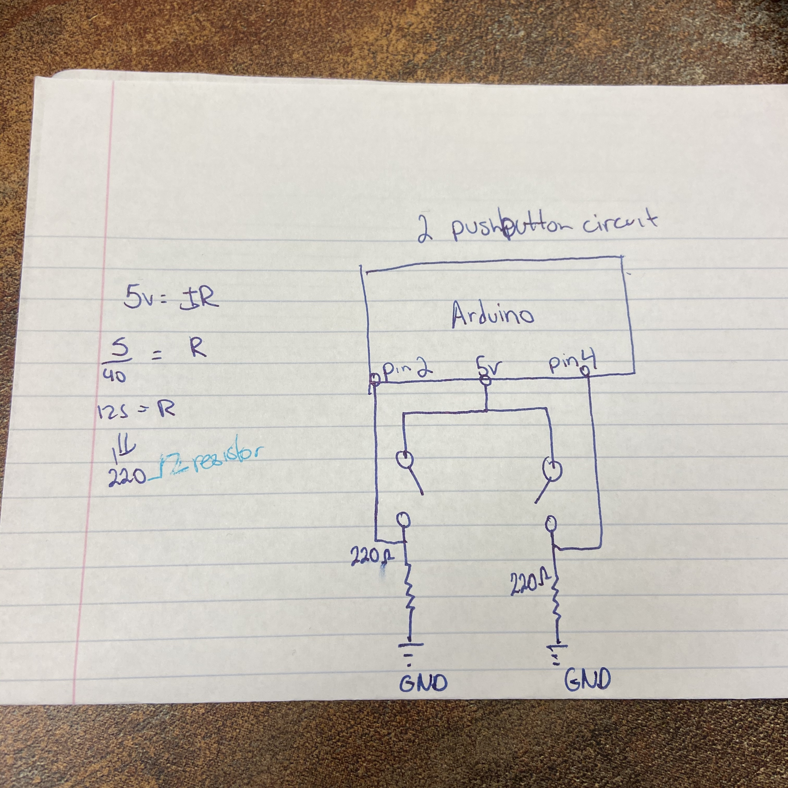

Assignment 5: Talking to Webpages!

^A picture of the circuit.
Here is all the documentation for assignment 5!
Below is the GIF of the circuit running.

Below is an image of the schematic. GOT HELP FROM STACKOVERFLOW AND ARDUINO AND KAY,LIA, ANTHONY, LILY

Below is a snippet of the code used in Arduino.
void setup() {
// put your setup code here, to run once:
Serial.begin(9600); // starting the serial
}
void loop() {
// put your main code here, to run repeatedly:
int button1 = digitalRead(4); //second button
int button = digitalRead(2); // first button
//prints the 1 or 0 depending if button is pressed
Serial.println(button);
delay(100);
Serial.println(button1);
delay(100);
}
Code used in p5.js
var serial; // variable to hold an instance of the serialport library
var portName = '/dev/tty.usbmodem14201' //rename to the name of your port
var button; //some data coming in over serial!
var button1;
function setup() {
serial = new p5.SerialPort(); // make a new instance of the serialport library
serial.on('list', printList); // set a callback function for the serialport list event
serial.on('connected', serverConnected); // callback for connecting to the server
serial.on('open', portOpen); // callback for the port opening
serial.on('data', serialEvent); // callback for when new data arrives
serial.on('error', serialError); // callback for errors
serial.on('close', portClose); // callback for the port closing
serial.list(); // list the serial ports
serial.open(portName); // open a serial port
createCanvas(1200, 800);
background(0x08, 0x16, 0x40);
}
// get the list of ports:
function printList(portList) {
// portList is an array of serial port names
for (var i = 0; i < portList.length; i++) {
// Display the list the console:
print(i + " " + portList[i]);
}
}
function serverConnected() {
print('connected to server.');
}
function portOpen() {
print('the serial port opened.')
}
function serialError(err) {
print('Something went wrong with the serial port. ' + err);
}
function portClose() {
print('The serial port closed.');
}
function serialEvent() {
if (serial.available()) {
datain = Number(serial.readLine());
//console.log(datain);
}
}
function graphData(newData) {
// map the range of the input to the window height:
var yPos = map(newData, 0, 255, 0, height);
// draw the line in a pretty color:
stroke(255, 0, 80);
line(xPos, height, xPos, height - yPos);
// at the edge of the screen, go back to the beginning:
if (xPos >= width) {
xPos = 0;
// clear the screen by resetting the background:
background(0x08, 0x16, 0x40);
} else {
// increment the horizontal position for the next reading:
xPos++;
}
}
function draw() {
background(0);
fill(255);
if (button == 0) {
text("button pressed: NO", 30,30);
} else {
text("button pressed: YES", 30,30);
}
if (button1 == 0) {
text("button pressed: NO", 30,30);
} else {
text("button pressed: YES", 30,30);
}
}